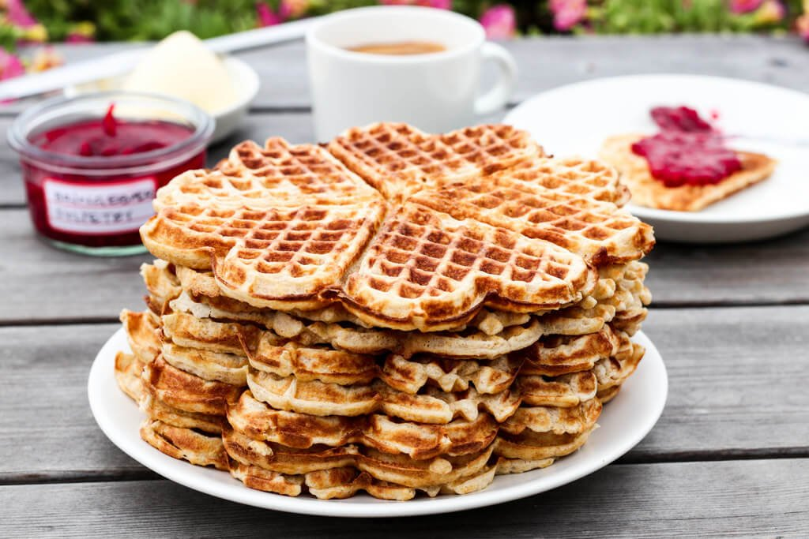

Waffles

Description:
Mom's amazingly delicious homemade waffles. This recipe will create 6 waffles.
Ingredients:
- 3 eggs
- 110g butter
- 100g white sugar
- 1tbsp water
- 200g wheat flour
- 1.5 (small) glass whole milk
Steps:
- Put eggs and sugar in a bowl and mix.
- Melt butter and add into bowl with water. Mix slowly.
- Add milk. Mix slowly.
- Add flour and mix vigorously.
Return to homepage